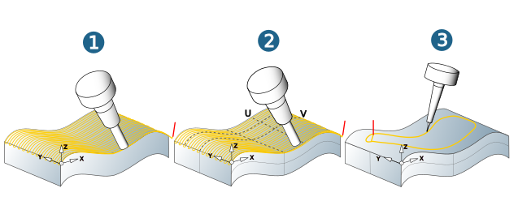
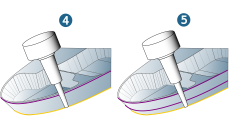
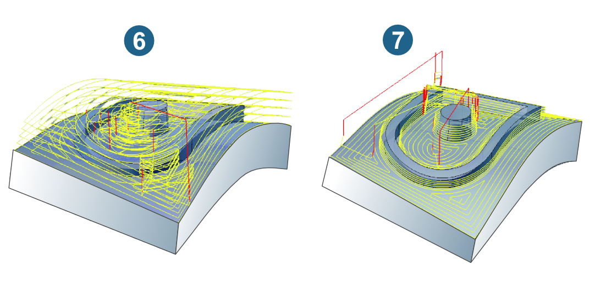
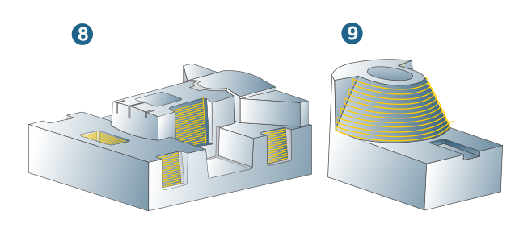
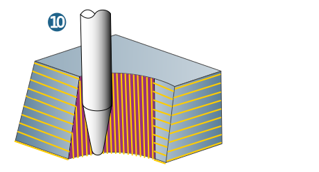

11.3. Surface Milling
The cycles of the surface machining package are used for machining slightly curved surfaces and geometries with regular surfaces.
The tool inclination is generally determined by the surface normals of the selected surface or guiding surface.
All additional elements (points, lines, contours) that determine the milling behavior of the tool must lie on the surfaces to be machined.
Overview of cycles
The cycles of the surface machining package are used for machining slightly curved surfaces and geometries with regular surfaces.
The tool inclination is generally determined by the surface normals of the selected surface or guiding surface.
All additional elements (points, lines, contours) that determine the milling behavior of the tool must lie on the surfaces to be machined.
5X Top Milling (1):
Top Milling in which the tool inclination at the contact point is calculated with a freely specifiable slope angle to the surface normals. The toolpaths can be oriented to the X or Y axis or to a freely definable profile.
5X Iso Top Milling (2):
Here, the tool inclination at the contact point is calculated with a freely specifiable slope angle to the normal of face in the infeed direction. The toolpaths are oriented to the U or V lines of the surface(s) or the selected synchronization lines.
5X Contouring (3):
5X contour machining is particularly suited to shape elements that are milled with a defined tool inclination to the surface, such as grooves, cut edges or engravings. Using optional synchronization lines, the tool inclination can be manually adjusted locally.
|  |
5X SWARF Cutting 1 Curve (4):
The cycle is used for regular surfaces that permit a milling tool to come into contact with a line. The machining area in the axial direction is defined by a profile curve.
The tool inclination is determined by the surface to be milled. The use of end mills with swarf machining enables short machining times.
5X SWARF Cutting 2 Curves (5):
The cycle is used for regular surfaces that permit a milling tool to come into contact with a line. For swarf cutting with two curves, the machining area in the axial direction is also defined by a profile curve.
As opposed to swarf cutting with one curve, the tool inclination here is defined by an additional profile curve. The use of end mills with swarf machining enables short machining times.
|  |
5X Shape Offset Roughing (6):
Roughing of slightly curved surfaces with a uniform allowance, whereby the milling path follows the selected drive surfaces. Bottom surfaces may be defined for machining, making individual adjustments possible.
5X Shape Offset Finishing (7):
Finishing of slightly curved surfaces with a uniform allowance, whereby the milling path follows the selected drive surfaces Bottom and stop surfaces may be defined for machining, whereby individual adjustments are possible.
|  |
Tangent Plane Machining (MAXX Machining) (8):
Finishing of planar surfaces with barrel tools. Simple operation through automatic adjustment of the tool inclination to the surface(s) to be milled. The automatic collision check guarantees optimal process safety. A high degree of efficiency through the combination of machining strategies and tool shapes.
Tangent Machining (9)
Tangential finishing of curved surfaces. Definition of the contact point of the tool by automatically generated Iso curves or Z-constant curves. Selection of manually generated curves is optionally possible. Collision avoidance and automatically generated approach and retract macros ensure optimal tool paths.
|  |
Prismatic Fillet Finishing (10)
5X Prismatic Fillet Finishing.
Extension of the 5X Tangent Plane Machining cycle. Perfect transition to flat areas.
Support for barrel tools.
Reduction of 5-axis movements with the Automatic indexing and Prefer fixed functions.
|  |